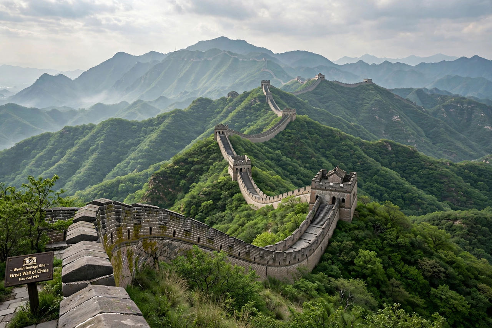

World Heritage Site
From Wikipedia, the free encyclopedia

A World Heritage Site is a landmark or area with legal protection by an international convention administered by UNESCO. Sites are nominated for their cultural, historical, scientific or other significance and are judged to be of 'outstanding universal value' to humanity. As of the mid-2020s the World Heritage List contains over 1,200 sites in more than 160 countries.
The Convention
The World Heritage Convention was adopted in 1972, partly in response to the international campaign that saved the temples of Abu Simbel from flooding by the Aswan Dam. The first twelve sites were inscribed in 1978, including Yellowstone National Park, Aachen Cathedral and the Galápagos Islands. States Parties nominate sites from national 'tentative lists'; the World Heritage Committee inscribes them as cultural, natural or mixed properties.
Protection and danger list
Inscription obliges the host state to protect the site and gives access to the World Heritage Fund and international attention, boosting tourism — which can itself threaten sites. Sites under threat are placed on the List of World Heritage in Danger; a few have been removed entirely, including Dresden Elbe Valley (2009, over a bridge) and Liverpool (2021, over waterfront development).
Distribution and criticism
Italy and China hold the most sites (around sixty each). Critics note a Eurocentric bias in early inscriptions, the politicisation of committee decisions, and weak enforcement: inscription has not prevented destruction at sites such as Palmyra during the Syrian civil war.